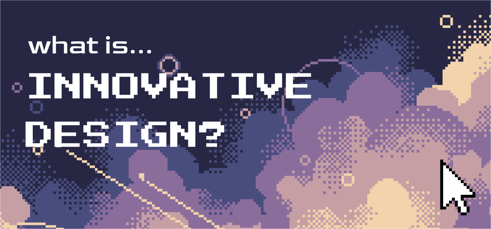

Timeline: July 1 2023 - Dec 20 2023
#9900FF
Curating a new purple branding for Innovative Design @ USC

Task
Innovative Design at USC changes their instagram brand identity each semester according to their Hex
Class, and for the Fall 2023 Semester, its #9900FF, or purple.
As the VP of Marketing for the semester, I’ve been tasked to curate and execute a purple brand design for the marketing assets for the organization. The branding reflected a fun and exciting pixel aesthetic with the theme of space, following our astronaut as you explore the world of Innovative Design.
As the VP of Marketing for the semester, I’ve been tasked to curate and execute a purple brand design for the marketing assets for the organization. The branding reflected a fun and exciting pixel aesthetic with the theme of space, following our astronaut as you explore the world of Innovative Design.
Ideation

Our process began with the task of making moodboard according to our theme of purple. We developed
various themes, like UltraViolet, Space, Retro, and Pixel games.
When communicating with the presidents, they seemed to like the aesthetic of pixel games, along with the theme of space
When communicating with the presidents, they seemed to like the aesthetic of pixel games, along with the theme of space
Design Guides
Pixel illustration by my teammate which set the tone for the branding
Press Start 2P
Goldman
Through trials, we decided on this color palette & typography for the semester
We used a mix of a pixel art program called Aesprite, and then put the final touches together on Figma
We used a mix of a pixel art program called Aesprite, and then put the final touches together on Figma
Takeaways
Aesprite is a non collaborative program, so our team members had to work on it individually, so
making a collection of backgrounds and transparent assets on figma made the process of putting
together posts much faster.
Initially, I wanted to have our team members choose and have more creative discussion on the making of the posts, but as deadlines come up fast, simply assigning tasks made the process much faster. If time allowed, I would have liked to have more group meetings.
Initially, I wanted to have our team members choose and have more creative discussion on the making of the posts, but as deadlines come up fast, simply assigning tasks made the process much faster. If time allowed, I would have liked to have more group meetings.
Here are some of our instagram statistics from September through December -->